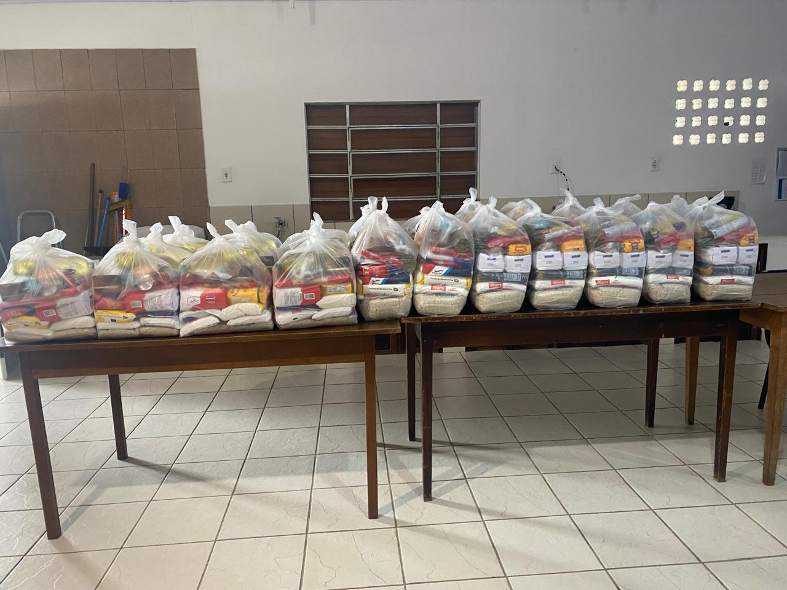
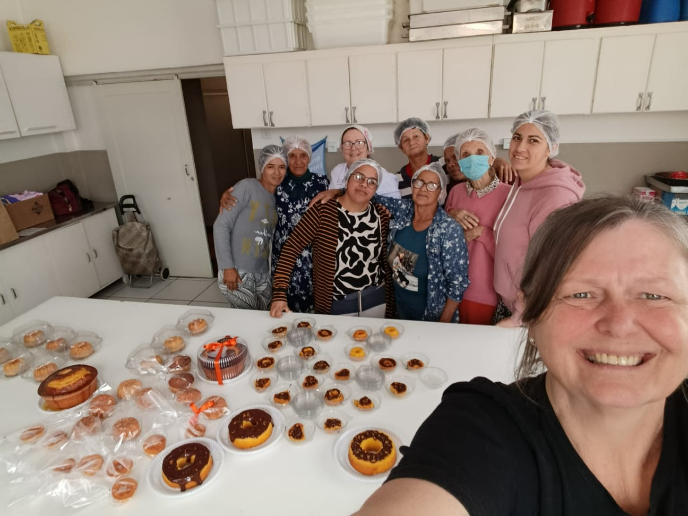

O que é a Missão Diaconal
Propósito
O propósito da Missão Diaconal é glorificar a Deus
e, como fruto do seu amor, servir ao próximo em
suas necessidades espirituais, emocionais e
materiais, por meio da Palavra de Deus e de ações
concretas de cuidado e auxílio.
Como parte da ação diaconal da IECLB, entendemos
que cuidar do próximo é parte inseparável do anúncio
do Evangelho. Não são duas ações separadas, mas
expressões de uma mesma missão: servir a Deus e
ao próximo com amor, fé e compromisso.
Cultos
O momento mais importante para nós da missão diaconal é
o nosso momento de culto.
Nosso culto não é destinado somente às
pessoas atendidas pelo projeto.
Ele é um momento de toda a Igreja.
Por isso, todos os membros da comunidade
são convidados a participar e celebrar o
Senhor também às terças-feiras, às 15h.
Nesse momento, acolhemos também as
famílias que participam da Missão Diaconal,
para que possam não apenas receber auxílio,
mas também viver a fé, a comunhão e o
pertencimento a uma comunidade cristã.
"Então Jesus declarou: 'Eu sou o pão da vida. Aquele que vem a mim nunca terá fome; aquele que crê em mim nunca terá sede.'"
João 6:35 (NVI)
Como funciona na terça-feira
Todas as terças-feiras, das 15:00 às 16:15.
Culto
Um momento de culto aberto a todos que participam da Missão Diaconal.
Pequenos Grupos
Após o culto, cerca de 15 minutos em grupo: um momento de reflexão da Palavra e um momento em que as pessoas podem se abrir e compartilhar da Palavra de Deus.
Outros Apoios
Além dos encontros de terça-feira, a Missão Diaconal também desenvolve outras ações de cuidado e auxílio.
Algumas fotos do Projeto
Um pouco do que já acontece por aqui.


Quer ajudar?
Você pode contribuir com a Missão Diaconal da Igreja Luterana de Pirabeiraba de diferentes maneiras: doando roupas e alimentos, contribuindo com outros itens necessários ou dedicando seu tempo para servir.
Sim! Quero saber como ajudar!